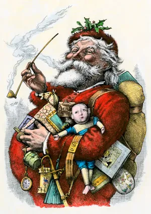

santa claus
Santa Claus, legendary figure who is the traditional patron of Christmas in the United States and other countries,
bringing gifts to children. His popular image is based on traditions associated with Saint Nicholas, a 4th-century Christian
saint. Father Christmas fills the role in many European countries.
The Dutch are credited with transporting the legend of Saint Nicholas (Sinterklaas) to New Amsterdam (now New York City), along
with the custom of giving gifts and sweets to children on his feast day, December 6. The current depiction of Santa Claus is based
on images drawn by cartoonist Thomas Nast for Harper’s Weekly beginning in 1863. Nast’s Santa owed much to the description given in the
poem “A Visit from St. Nicholas” (also known as “’Twas the Night Before Christmas”), first published in 1823. The image was further defined
by the popular Santa Claus advertisements created for the Coca-Cola Company from 1931 by illustrator Haddon Sundblum. Sundblum’s Santa was
a portly white-bearded gentleman dressed in a red suit with a black belt and white fur trim, black boots, and a soft red cap.
